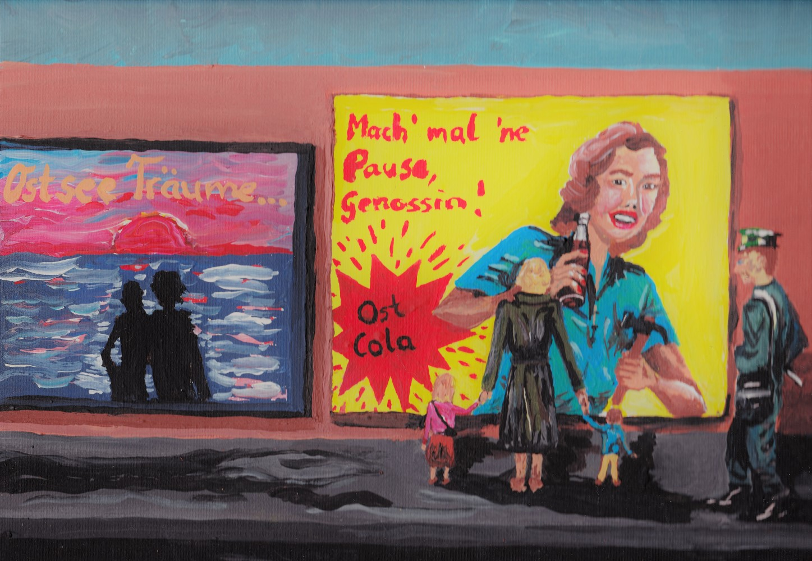

The Deserters
Laura Okkema

“The Deserters” is a text-based digital game based on the experiences of the author's family as refugees from East Germany. The player's objective in the game is to research a family's history by searching the game-world for authentic documents, including biographical writings, journal entries, photographs, and records, thereby retracing historical events through personal experience. “The Deserters” aims at inspiring a compassionate and empathetic stance towards immigrants and refugees today. Okkema reflects on the ethical, narrative, aesthetic, and technical choices she made throughout the creation process of The Deserters to create a critical activist game. The results of the analysis demonstrate that Twine offers a unique environment for composing politically impactful personal narratives.
Critical making is an approach to scholarship which combines discursive methods with creative practices. The concept has recently gained traction in the digital humanities, where scholars are looking for ways of integrating making into their research in ways that are inclusive and empowering to marginalized populations. This dissertation explores how digital humanists can engage critical making as a form of activism in electronic literature, specifically in the interactive fiction platform Twine. The author analyzes the making process of her own activist Twine game The Deserters and embeds the project within digital humanities discourses on activism and social justice, hypertext, electronic literature, critical making, and hacker culture. The Deserters is a text-based digital game based on the experiences of the author's family as refugees from East Germany. The player's objective in the game is to research a family's history by searching the game-world for authentic documents, including biographical writings, journal entries, photographs, and records, thereby retracing historical events through personal experience. The Deserters aims at inspiring a compassionate and empathetic stance towards immigrants and refugees today. The author reflects on the ethical, narrative, aesthetic, and technical choices she made throughout the creation process of The Deserters to create a critical activist game. The results of the analysis demonstrate that Twine offers a unique environment for composing politically impactful personal narratives. From the project, the author derives best practices for activist critical making, which emphasize the importance for makers to imagine the needs and perspectives of their audience. The work expands digital humanities' theoretical and practical toolkit for critical making.
About the Author
Laura Okkema
Laura Okkema holds a PhD in Texts and Technology from the University of Central Florida (2019), an M.Sc. in Rhetoric and Technical Communication from Michigan Technological University (2014), and a BA in English and physics from Technische Universität Dortmund, Germany (2011). Laura is interested in activist critical making, which combines academic research with social activism, creative expression, and technology. She currently works as a German lecturer at the University of Michigan, Ann Arbor.